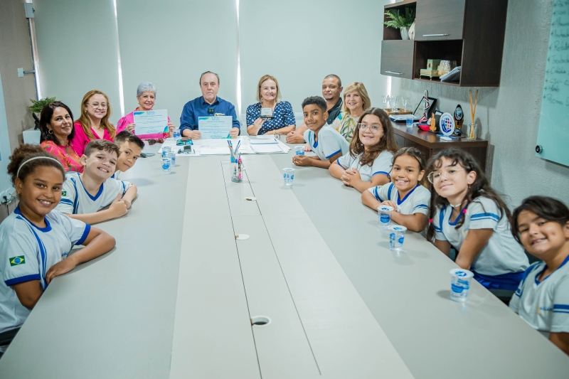

Andradina é um município localizado no estado de São Paulo, Brasil,
na região do Alto Paraná. Sua história começou no século XIX com a
chegada de colonizadores, em uma área inicialmente habitada por
povos indígenas. A agricultura, especialmente o cultivo de café,
tornou-se a principal atividade econômica da região. O nome
"Andradina" deriva da família Andradas, que teve um papel importante
na formação da cidade.
Andradina foi oficialmente fundada em 1921, e seu crescimento foi
impulsionado pela construção de ferrovias e melhorias na
infraestrutura. Ao longo do século XX, a cidade se consolidou como
um centro comercial e agrícola importante. Atualmente, Andradina é
conhecida por sua produção agrícola, qualidade de vida e rica
cultura, que inclui festivais e tradições locais.
PIB
Produto Interno Bruto é um indicador econômico que mede a soma de
todos os bens e serviços finais produzidos em uma região, como um
país, estado ou cidade, durante um período de tempo
Valor Adicionado Bruto por Setor Econômico em 2020 Total:
2.42M
Com um PIB per capita de cerca de R$49.703,65
Ultima Atualização em 2021
IDH
| Cidades |
IDHs |
| ANDRADINA |
0,779 |
| Três Lagoas |
0,744 |
| Castilho |
0,731 |
| Mirandópolis |
0,751 |
| Guaraçaí |
0,719 |
| Araçatuba |
0,788 |
| Valparaizo |
0,725 |
| Pereira Barreto |
0,766 |
| Ilha Solteira |
0,812 |
| Tupi Paulista |
0,769 |
Mortalidade Infantil
| Cidades |
Taxa de Mortalidade Infantil (2022)
há cada mil nascidos
vivos
|
| ANDRADINA |
8,59 |
| Três Lagoas |
12,66 |
| Castilho |
5,15 |
| Mirandópolis |
19,61 |
| Guaraçaí |
- |
| Araçatuba |
13,41 |
| Valparaizo |
11,72 |
| Pereira Barreto |
20,2 |
| Ilha Solteira |
18,52 |
| Tupi Paulista |
- |
Expectativa de Vida
| Cidades |
Expectativas de Vida |
| ANDRADINA |
70,77 (anos) |
| Três Lagoas |
75,80 (anos) |
| Castilho |
72,09 (anos) |
| Lins |
73,56 ( |
| Guaraçaí |
72,19 (anos) |
| Araçatuba |
75,46 (anos) |
| Ilha Solteira |
77,40 (anos) |
Taxa de Alfabetismo
As avaliações do Governo do Estado, aconteceram no final de 2023,
reunindo 343,8 mil estudantes do
2º
ano do ensino fundamental de 600 cidades, e o salto de Andradina foi
de 19% no índice de alunos leitores iniciantes e leitores fluentes.
A média andradinense superou a do Estado que foi de 9%, estando
Andradina entre as 120 melhores avaliadas em São Paulo.

Sobre Nós
A Jala é uma empresa de tecnologia inovadora que se destaca por suas soluções digitais voltadas para a transformação de negócios. Fundada por um grupo de estudantes do SESI-025/SENAI apaixonados por tecnologia e inovação, a Jala tem como missão ajudar empresas a otimizar processos e melhorar a experiência do cliente por meio de ferramentas inteligentes e personalizadas.
Com um portfólio diversificado, a Jala oferece serviços que vão desde o desenvolvimento de software sob medida até consultoria em transformação digital. Seu foco está em entender as necessidades específicas de cada cliente, criando soluções que não apenas atendem, mas superam expectativas.
A empresa também valoriza a cultura de inovação, incentivando seus colaboradores a pensar fora da caixa e buscar novas abordagens para resolver desafios.
Além de seu compromisso com a excelência, a Jala se preocupa com a sustentabilidade e a responsabilidade social, implementando práticas que minimizam o impacto ambiental e promovendo a inclusão digital em comunidades carentes.
Com uma visão voltada para o futuro, a Jala continua a expandir sua presença no mercado, sempre em busca de novas tecnologias e tendências que possam beneficiar seus clientes e impactar positivamente o mundo.